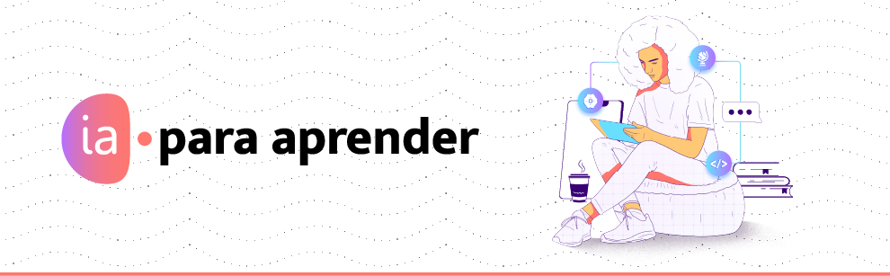

Tema Medidas de tendencia central
Presentación
Las medidas de tendencia central son valores estadísticos que representan de manera resumida el punto central o típico de un conjunto de datos. Las principales medidas de tendencia central son la media, la mediana y la moda. Se estudian para entender y describir mejor los datos, proporcionando una forma sencilla de resumir grandes cantidades de información y facilitando la comparación entre diferentes conjuntos de datos. Su importancia radica en su capacidad para ofrecer una visión general del comportamiento de los datos, identificando patrones y tendencias que pueden ser esenciales para la toma de decisiones informadas. Las aplicaciones de las medidas de tendencia central son vastas, abarcando campos como la economía, la medicina, la psicología, la educación, y la investigación científica, donde ayudan a analizar e interpretar datos para mejorar procesos, formular políticas y desarrollar estrategias efectivas.
Objetivo de aprendizaje
Identificar las medidas de tendencia central (media, mediana y moda) para analizar conjuntos de datos y tomar decisiones informadas.
Duración
2 horas